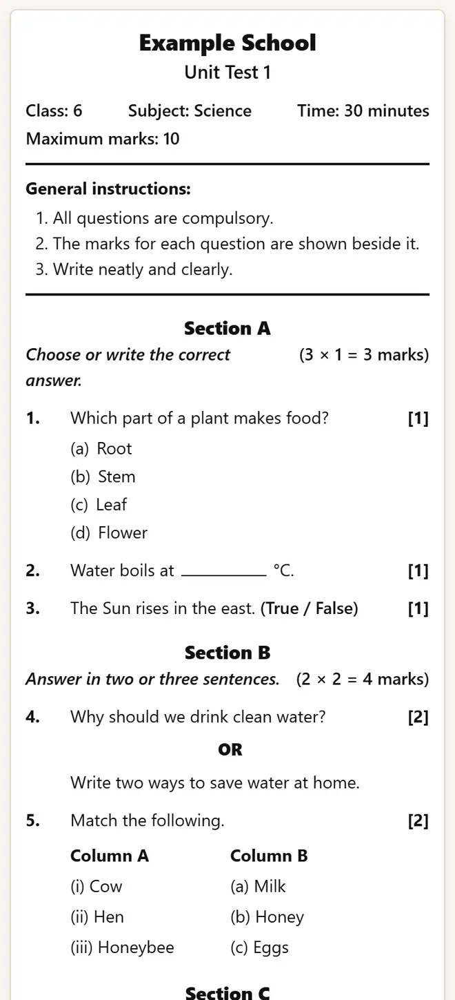

ଶିକ୍ଷକଙ୍କ ପାଇଁ ପ୍ରଶ୍ନପତ୍ରର ଫର୍ମାଟ୍: ଅନଲାଇନ୍ରେ ମାଗଣା ପ୍ରଶ୍ନପତ୍ର ତିଆରି କରନ୍ତୁ
ୱାର୍ଡ ପ୍ରୋସେସରରେ ପରୀକ୍ଷା ପ୍ରଶ୍ନପତ୍ର ଟାଇପ୍ କରିବାକୁ ସମୟ ଲାଗେ: କ୍ରମିକ ନମ୍ବର, ପାଖରେ ନମ୍ବର ଲେଖିବା, ବିକଳ୍ପଗୁଡ଼ିକୁ ସିଧା ଧାଡ଼ିରେ ସଜାଇବା। ଏହି ମାଗଣା ଆପ୍ ଫର୍ମାଟ୍ ନିଜେ ସମ୍ଭାଳେ। ଆପଣ ଯେକୌଣସି ଭାଷାରେ ପ୍ରଶ୍ନ ଲେଖନ୍ତୁ; ଏହା ସେଗୁଡ଼ିକୁ ନମ୍ବର ଦିଏ, ନମ୍ବର ମିଶାଏ ଓ ଉତ୍ତର ସୂଚୀ ତିଆରି କରିଦିଏ।
ସଂକ୍ଷିପ୍ତ ଉତ୍ତର
ପ୍ରଶ୍ନପତ୍ର ମେକର ଖୋଲନ୍ତୁ ଓ “ଖାଲି ପ୍ରଶ୍ନପତ୍ର ଆରମ୍ଭ କରନ୍ତୁ” ଦବାନ୍ତୁ। ସ୍କୁଲ, ପରୀକ୍ଷା, ଶ୍ରେଣୀ, ବିଷୟ, ସମୟ ଓ ପୂର୍ଣ୍ଣ ନମ୍ବର ଭରନ୍ତୁ। ବିଭାଗ ଯୋଡ଼ନ୍ତୁ, ପ୍ରତି ବିଭାଗରେ “ପ୍ରତି ପ୍ରଶ୍ନର ନମ୍ବର” ଭରନ୍ତୁ ଓ ପ୍ରଶ୍ନ ଯୋଡ଼ନ୍ତୁ। “ମୋଟ ନମ୍ବର” ପୂର୍ଣ୍ଣ ନମ୍ବର ସହ ମିଳିଗଲେ “ଛାପନ୍ତୁ କିମ୍ବା PDF ସେଭ୍ କରନ୍ତୁ” ଦବାନ୍ତୁ।
5ଟି ପାଦରେ ପ୍ରଶ୍ନପତ୍ର
-
ପ୍ରଶ୍ନପତ୍ରର ଶୀର୍ଷକ ଭରନ୍ତୁ
ପ୍ରଶ୍ନପତ୍ର ମେକର ଖୋଲନ୍ତୁ। ଏହା ଏକ ନମୁନା ପ୍ରଶ୍ନପତ୍ର ସହ ଖୋଲେ, ଯାହାଫଳରେ ଆପଣ ଫର୍ମାଟ୍ ଦେଖିପାରିବେ। ତାକୁ ହଟାଇବାକୁ “ଖାଲି ପ୍ରଶ୍ନପତ୍ର ଆରମ୍ଭ କରନ୍ତୁ” ଦବାନ୍ତୁ। ସ୍କୁଲର ନାମ, ପରୀକ୍ଷାର ନାମ, ଶ୍ରେଣୀ, ବିଷୟ, ସମୟ, ପୂର୍ଣ୍ଣ ନମ୍ବର ଓ ତାରିଖ ଲେଖନ୍ତୁ। ଛାତ୍ରଛାତ୍ରୀଙ୍କ ନାମ ଓ ରୋଲ୍ ନମ୍ବର ପାଇଁ ଧାଡ଼ି ମଧ୍ୟ ଯୋଡ଼ିପାରିବେ।
-
ସାଧାରଣ ନିର୍ଦ୍ଦେଶ ଲେଖନ୍ତୁ
ପ୍ରତି ଧାଡ଼ିରେ ଗୋଟିଏ ନିର୍ଦ୍ଦେଶ ଲେଖନ୍ତୁ, ଯେପରି “ସବୁ ପ୍ରଶ୍ନ ବାଧ୍ୟତାମୂଳକ”। ପ୍ରଶ୍ନପତ୍ରରେ ନିର୍ଦ୍ଦେଶ ଦରକାର ନ ଥିଲେ ସେହି ବକ୍ସର ଚିହ୍ନ କାଢ଼ିଦିଅନ୍ତୁ।
-
ବିଭାଗ ଯୋଡ଼ନ୍ତୁ ଓ ନମ୍ବର ଠିକ୍ କରନ୍ତୁ
ପ୍ରଶ୍ନପତ୍ରର ପ୍ରତି ଅଂଶ ପାଇଁ “ବିଭାଗ ଯୋଡ଼ନ୍ତୁ” ଦବାନ୍ତୁ। ଚାହିଁଲେ ବିଭାଗକୁ ଗୋଟିଏ ଶୀର୍ଷକ ଦିଅନ୍ତୁ ଓ “ପ୍ରତି ପ୍ରଶ୍ନର ନମ୍ବର” ଭରନ୍ତୁ: ସେହି ବିଭାଗର ପ୍ରତି ପ୍ରଶ୍ନର ସେତିକି ନମ୍ବର ରହିବ।
-
ପ୍ରଶ୍ନ ଯୋଡ଼ନ୍ତୁ
ପ୍ରତି ବିଭାଗରେ ଏହି ବଟନ୍ଗୁଡ଼ିକରେ ପ୍ରଶ୍ନ ଯୋଡ଼ନ୍ତୁ: “MCQ”, “ଶୂନ୍ୟସ୍ଥାନ ପୂରଣ”, “ଠିକ୍ କି ଭୁଲ୍”, “ସଂକ୍ଷିପ୍ତ ଉତ୍ତର”, “ଦୀର୍ଘ ଉତ୍ତର” ଓ “ମେଳ କର”। ଠିକ୍ ବିକଳ୍ପରେ ଚିହ୍ନ ଦିଅନ୍ତୁ କିମ୍ବା ଉତ୍ତର ସୂଚୀ ପାଇଁ ଉତ୍ତର ଲେଖନ୍ତୁ। ଆପଣ “କିମ୍ବା” ଥିବା ପ୍ରଶ୍ନ ଯୋଡ଼ିପାରିବେ, ପ୍ରଶ୍ନକୁ ଉପର-ତଳ କରିପାରିବେ କିମ୍ବା ତା’ର ନକଲ କରିପାରିବେ।

ବିଭାଗ ଓ ପ୍ରଶ୍ନ ଯୋଡ଼ନ୍ତୁ। ନମ୍ବର ନିଜେ ମିଶିଯାଏ। -
ମୋଟ ନମ୍ବର ଯାଞ୍ଚ କରି ପ୍ରିଣ୍ଟ କରନ୍ତୁ
ଆପ୍ ପ୍ରଶ୍ନକୁ ନମ୍ବର ଦିଏ ଓ ନମ୍ବର ମିଶାଏ। ପ୍ରଶ୍ନପତ୍ର ପୂର୍ଣ୍ଣ ନମ୍ବର ସହ ମିଳୁଛି କି ନାହିଁ, ତାହା “ମୋଟ ନମ୍ବର” ଦେଖାଏ। “ଛାପନ୍ତୁ କିମ୍ବା PDF ସେଭ୍ କରନ୍ତୁ” ଦବାନ୍ତୁ ଓ A4 କାଗଜ କିମ୍ବା Save as PDF ବାଛନ୍ତୁ। ଉତ୍ତରର ନିଜ କପି ପାଇଁ “ଉତ୍ତର ସୂଚୀ” ଖୋଲି “ଉତ୍ତର ସୂଚୀ ଛାପନ୍ତୁ” ଦବାନ୍ତୁ।

ପ୍ରଶ୍ନପତ୍ର, A4 ରେ ପ୍ରିଣ୍ଟ ପାଇଁ ପ୍ରସ୍ତୁତ।
ଭଲ ପ୍ରଶ୍ନପତ୍ର ପାଇଁ ପରାମର୍ଶ
- ସହଜରୁ କଷ୍ଟ ଆଡ଼କୁ ଯାଆନ୍ତୁ: ପ୍ରଥମେ ଛୋଟ ପ୍ରଶ୍ନ (MCQ, ଶୂନ୍ୟସ୍ଥାନ, ଠିକ୍ କି ଭୁଲ୍), ତା’ପରେ ସଂକ୍ଷିପ୍ତ ଉତ୍ତର, ତା’ପରେ ଦୀର୍ଘ ଉତ୍ତର।
- ମିଳାଅ ପ୍ରଶ୍ନରେ ପ୍ରତି ଠିକ୍ ଯୋଡ଼ି ଗୋଟିଏ ଧାଡ଼ିରେ ଲେଖନ୍ତୁ। ପ୍ରଶ୍ନପତ୍ର ଦ୍ୱିତୀୟ ସ୍ତମ୍ଭକୁ ନିଜେ ଅଦଳବଦଳ କରିଦିଏ, ଆଉ ଉତ୍ତର ସୂଚୀରେ ଠିକ୍ ଯୋଡ଼ି ରହେ।
- ପ୍ରଶ୍ନ ଯେକୌଣସି ଭାଷାରେ ଲେଖିହେବ। “ପ୍ରଶ୍ନପତ୍ରରେ ଛପା ଶବ୍ଦର ଭାଷା” ଦ୍ୱାରା ସମୟ, ପୂର୍ଣ୍ଣ ନମ୍ବର ଓ ବିଭାଗ ଭଳି ଶବ୍ଦ ଆପଣଙ୍କ ପ୍ରଶ୍ନପତ୍ରର ଭାଷାରେ ଛପାହୁଏ।
- ପ୍ରଶ୍ନପତ୍ରକୁ ଫାଇଲ୍ ଭାବେ ରଖିବାକୁ “ପ୍ରଶ୍ନପତ୍ର ଫାଇଲ୍ରେ ସେଭ୍ କରନ୍ତୁ” ଦବାନ୍ତୁ। ପରବର୍ତ୍ତୀ ଥର “ସେଭ୍ କରିଥିବା ପ୍ରଶ୍ନପତ୍ର ଖୋଲନ୍ତୁ” ଦବାନ୍ତୁ, କିଛି ପ୍ରଶ୍ନ ବଦଳାନ୍ତୁ ଓ ପୁଣି ପ୍ରିଣ୍ଟ କରନ୍ତୁ। ଫାଇଲ୍ଟି ଅନ୍ୟ ଶିକ୍ଷକଙ୍କୁ ମଧ୍ୟ ପଠାଇହେବ।
ନୂଆ ମାଗଣା ଟୁଲ୍ ଓ ହିନ୍ଦୀରେ AI ପାଠ ପାଆନ୍ତୁ
ଆମ ଇମେଲ୍ ତାଲିକାରେ ଯୋଗ ଦିଅନ୍ତୁ: ନୂଆ ମାଗଣା ଆପ୍, ନୂଆ ଗାଇଡ୍ ଓ AI ଉପରେ ହିନ୍ଦୀ ଭିଡିଓ ପାଠର ଖବର ଆପଣ ପାଇବେ। କୌଣସି ସ୍ପାମ୍ ନାହିଁ।
କେବଳ ବୟସ୍କଙ୍କ (18+) ପାଇଁ। ଆପଣ ଯେକୌଣସି ସମୟରେ ନାମ ହଟାଇ ପାରିବେ।
ଆମେ ଏହି ଟୁଲ୍ କାହିଁକି ପରାମର୍ଶ ଦେଉ
- ସମସ୍ତଙ୍କ ପାଇଁ ମାଗଣା: ବିଜ୍ଞାପନ ନାହିଁ, ସାଇନ୍-ଅପ୍ ନାହିଁ, ପେଡ୍ ପ୍ଲାନ୍ ନାହିଁ।
- ବ୍ୟକ୍ତିଗତ: ଆପଣଙ୍କ ଫାଇଲ୍ ଓ ତଥ୍ୟ ଆପଣଙ୍କ ନିଜ ଡିଭାଇସ୍ରେ ହିଁ ରହେ।
- ଫୋନ୍, ଲାପଟପ୍ କିମ୍ବା ସ୍ମାର୍ଟବୋର୍ଡରେ ଚାଲେ, ଏବଂ ଥରେ ଖୋଲିବା ପରେ ଇଣ୍ଟରନେଟ୍ ବିନା ମଧ୍ୟ।
- ଓଡ଼ିଆ ଓ ହିନ୍ଦୀ ସମେତ 12ଟି ଭାଷାରେ।
ଭିଡିଓରୁ ଶିଖିବା ଭଲ ଲାଗେ? ଆମ YouTube ଚ୍ୟାନେଲରେ AI ଓ ମାଗଣା ଟୁଲ୍ର ହିନ୍ଦୀ ପାଠ ଦେଖନ୍ତୁ।
ବାରମ୍ବାର ପଚରାଯାଉଥିବା ପ୍ରଶ୍ନ
ପ୍ରଶ୍ନପତ୍ରର ଫର୍ମାଟ୍ କେମିତି ହୁଏ?
ସବୁଠୁ ଉପରେ ସ୍କୁଲର ନାମ, ପରୀକ୍ଷାର ନାମ, ଶ୍ରେଣୀ, ବିଷୟ, ସମୟ ଓ ପୂର୍ଣ୍ଣ ନମ୍ବର। ତା’ପରେ ସାଧାରଣ ନିର୍ଦ୍ଦେଶ, ଆଉ ତା’ପରେ ବିଭାଗ ଅନୁସାରେ ପ୍ରଶ୍ନ, ସାଥିରେ ନମ୍ବର। ଆପଣଙ୍କ ସ୍କୁଲ କିମ୍ବା ବୋର୍ଡର ନିଜସ୍ୱ ଢାଞ୍ଚା ଥାଇପାରେ, ତେଣୁ ବିଭାଗ ସଂଖ୍ୟା ଓ ନମ୍ବର ସେହି ଅନୁସାରେ ରଖନ୍ତୁ।
ଓଡ଼ିଆ, ହିନ୍ଦୀ କିମ୍ବା ଅନ୍ୟ ଭାଷାରେ ପ୍ରଶ୍ନପତ୍ର ତିଆରି ହେବ କି?
ହଁ। ଆପଣଙ୍କ ଫୋନ୍ କିମ୍ବା କମ୍ପ୍ୟୁଟରରେ ଯେଉଁ ଭାଷାରେ ଟାଇପ୍ ହୋଇପାରେ, ସେହି ଭାଷାରେ ପ୍ରଶ୍ନ ଲେଖନ୍ତୁ। “ପ୍ରଶ୍ନପତ୍ରରେ ଛପା ଶବ୍ଦର ଭାଷା” ରେ ସେହି ଭାଷା ବାଛନ୍ତୁ, ଯାହାଫଳରେ ପ୍ରଶ୍ନପତ୍ରର ଲେବଲ୍ ମଧ୍ୟ ସେହି ଭାଷାରେ ହେବ।
ଏହା ଉତ୍ତର ସୂଚୀ ମଧ୍ୟ ତିଆରି କରେ କି?
ହଁ। ଆପଣ ଯେଉଁ ଠିକ୍ ବିକଳ୍ପରେ ଚିହ୍ନ ଦିଅନ୍ତି ଓ ଯେଉଁ ଉତ୍ତର ଲେଖନ୍ତି, ସେଥିରୁ ଉତ୍ତର ସୂଚୀ ତିଆରି ହୁଏ। ଦେଖିବାକୁ “ଉତ୍ତର ସୂଚୀ” ଖୋଲନ୍ତୁ ଓ ଅଲଗା ଛାପିବାକୁ “ଉତ୍ତର ସୂଚୀ ଛାପନ୍ତୁ” ଦବାନ୍ତୁ।
ପ୍ରଶ୍ନପତ୍ରକୁ PDF କିମ୍ବା Word ଫାଇଲ୍ରେ ସେଭ୍ କରିହେବ କି?
PDF: ହଁ। “ଛାପନ୍ତୁ କିମ୍ବା PDF ସେଭ୍ କରନ୍ତୁ” ଦବାନ୍ତୁ ଓ Save as PDF ବାଛନ୍ତୁ। ଆପ୍ Word ଫାଇଲ୍ ତିଆରି କରେ ନାହିଁ। “ପ୍ରଶ୍ନପତ୍ର ଫାଇଲ୍ରେ ସେଭ୍ କରନ୍ତୁ” ଦ୍ୱାରା ଗୋଟିଏ ଫାଇଲ୍ ସେଭ୍ ହୁଏ, ଯାହା ଏହି ଆପ୍ରେ ପୁଣି ଖୋଲେ, ଯାହାଫଳରେ ପରେ ପ୍ରଶ୍ନପତ୍ର ବଦଳାଇହେବ।
ଏହା ମାଗଣା କି? ମୋ ପ୍ରଶ୍ନ ଡିଭାଇସ ବାହାରକୁ ଯାଏ କି?
ଏହା ମାଗଣା, ସାଇନ୍-ଅପ୍ ନାହିଁ, ୱାଟରମାର୍କ ନାହିଁ। ପ୍ରଶ୍ନପତ୍ର ଆପଣଙ୍କ ବ୍ରାଉଜରରେ ତିଆରି ହୁଏ ଓ କିଛି ଅପଲୋଡ୍ ହୁଏ ନାହିଁ, ତେଣୁ ପ୍ରଶ୍ନ ଆପଣଙ୍କ ପାଖରେ ହିଁ ରହେ।
କାମରେ ଲାଗିଲା?
କୌଣସି ବନ୍ଧୁ, ସହକର୍ମୀ କିମ୍ବା ଆପଣଙ୍କ ସ୍କୁଲର WhatsApp ଗ୍ରୁପ୍କୁ ପଠାନ୍ତୁ।